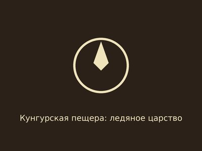
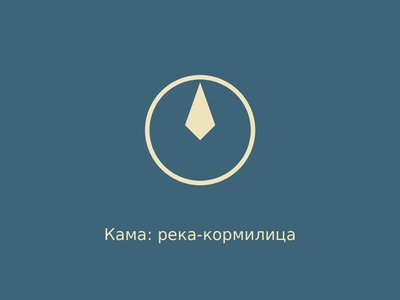

Кунгурская пещера: ледяное царствоЭкскурсия по знаменитой Кунгурской пещере: история открытия, гроты и подземные озёра.⏱ 0 мин
Кама: река-кормилицаРассказ о великой реке Прикамья, пристанях и старожилах прибрежных сёл.⏱ 0 мин